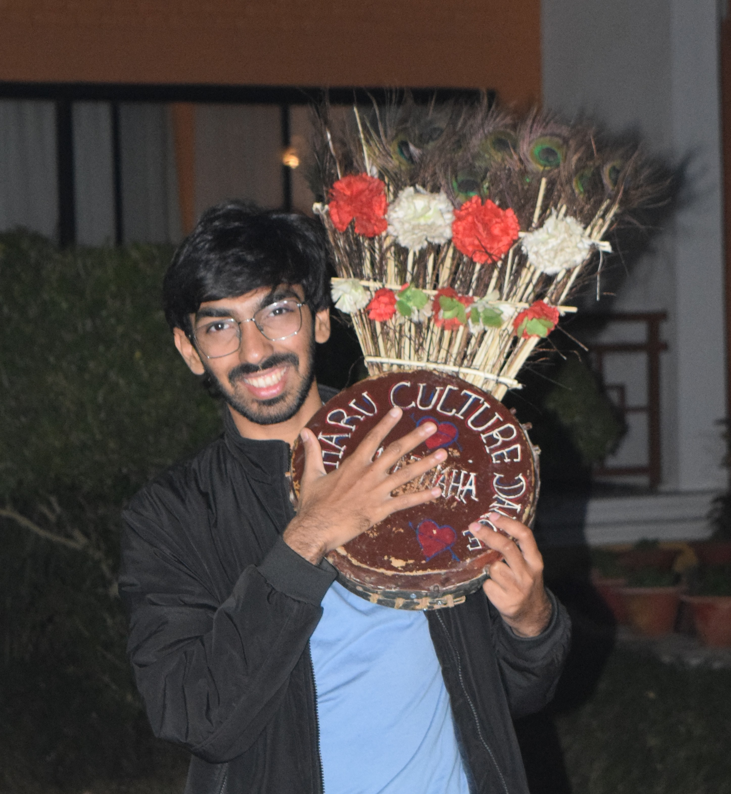

I am mrunalnshah.
I read, code, listen, eat, and lose hours playing games. I'm the kind of person who gets obsessed with ideas, projects, late-night conversations, and anything that feels alive — anything with a little BANG! (qu)Bit, Atoms, Neurons, Genes Treks, cold winds, long roads, and snowy mountains are my system reboot. I'm spiritual but in my own way, and just a normal fedora user. Let's talk about "you"! but before that, let me finish myself.
Master's student in Artificial Intelligence at Northeastern University, with a focus on working with messy data, semantic model building, and multimodal architectures spanning Computer Vision, NLP, and Reinforcement Learning.
Recently completed an internship as an AI/ML Engineer Intern at Silver Touch Technologies, where I worked on AI models for user compliance and violation detection. During my bachelor's, I worked on computer vision for pneumonia detection from chest X-ray images and curated two datasets.
[September - 09 - 2026] Started M.S. in AI at Northeastern University.
[May - 15 - 2026] Completed my internship as AI/ML Engineer Intern at Silver Touch.